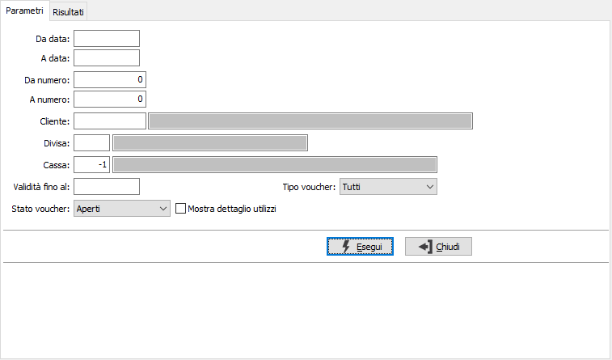
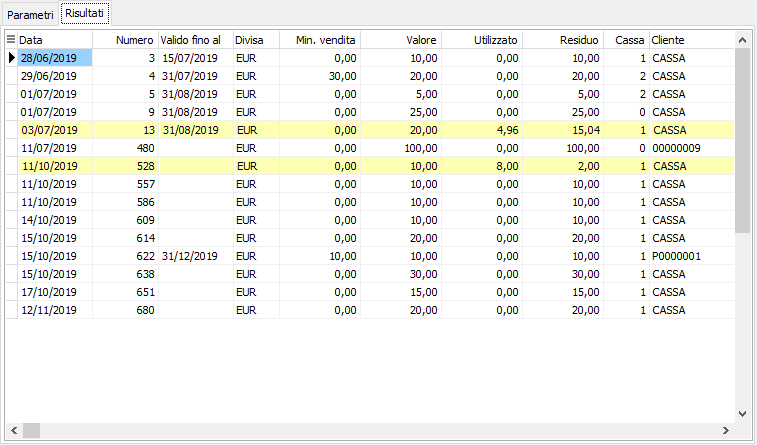
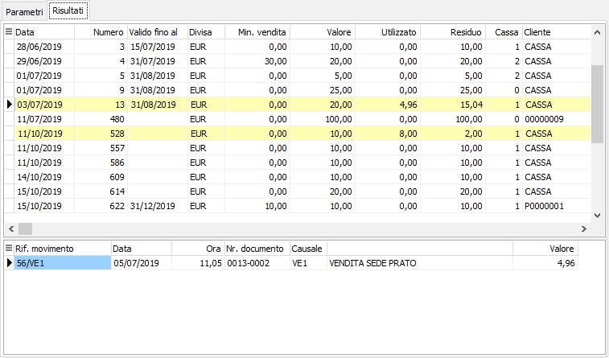

Analisi voucher
Il programma consente di analizzare i voucher emessi ed i loro utilizzi.

Si possono specificare il periodo da analizzare, un range di numeri, il cliente, la divisa, la data di validità, il tipo di voucher e lo stato dei voucher. Vengono mostrati i voucher relativi ai parametri selezionati evidenziando quelli utilizzati.

Premendo il pulsante Esegui si effettua l'elaborazione e si accede alla pagina Risultati; viene presentato nella griglia superiore l’elenco degli addetti: per ognuno vengono visualizzati nella griglia sottostante i valori in relazione al tipo di analisi selezionato.

Se si spunta la casella "Mostra dettaglio utilizzi", posizionandosi poi sul voucher utilizzato nella parte inferiore della finestra vengono mostrati i movimenti su cui il voucher è stato utilizzato.
Dalla pagina Risultati, tramite i pulsanti presenti nella Toolbar sarà possibile effettuare la stampa.